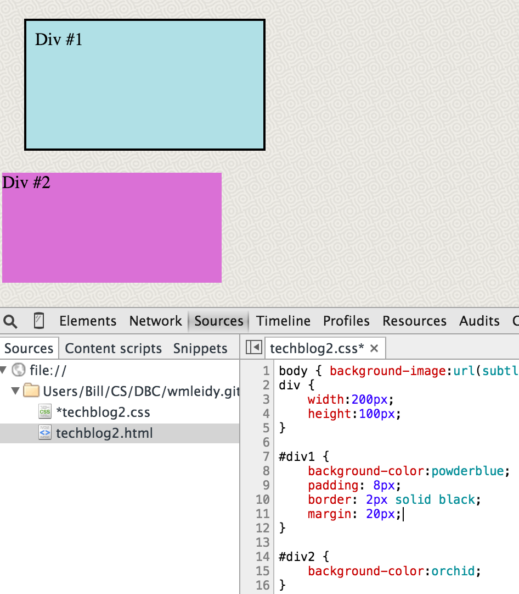

Understanding the CSS Box Model: Borders, Margins, and Padding
June 20, 2015
Modern web design relies on a very traditional, almost patriarchal concept: strict division of labor between partners. According to the latest recommendations, the two languages at the foundation of every webpage, HTML and CSS, should perform very prescribed roles: HTML handles all the big words and big ideas as well as their semantic meaning (content), whereas CSS concerns itself almost exclusively with beauty (form...and formatting).
This division of labor actually makes a lot of sense for web design. When aesthetic tastes shift and what was considered beautiful or cutting-edge falls out of fashion, a web designer can make changes to the underlying CSS to rejuvenate the site without needing to touch or alter the content contained in the HTML. This makes “changing outfits” effortless and easy (aside from conceptualizing them, designing them, making sure they’re user-friendly, making sure they’re cross-browser and cross-device compatible, etc., etc.). But, at the very least, possessing mastery over CSS allows a designer to faithfully execute his or her design ideas.
The Box Model
The road to becoming a true CSS virtuoso is a long and arduous one. For many people, the first step on this virtual Iditarod is to understand the box model which lies at the core of CSS. Simply put, every single element on a webpage actually exists inside a rectangular box. Text, images, animations, the little circular bullets in front of lists—all rectangular boxes, which are defined and manipulated in CSS. Of course, things that are more explicitly boxes are possible too—here’s an example of two rectangles (200 pixels by 100 pixels) that I’ve defined using CSS:
These two boxes are “naked.” What do I mean by that? I mean that they lack the three additional rectangular boxes that usually surround the rectangular box of the core element. In fact, it’s not too much of a stretch to consider every web element as a set of four rectangular boxes—the core element, which is surrounded by padding, which is in turn surrounded by a border, which is in turn surrounded by a margin. Or, in graphical terms:

A web designer can choose any combination of these three surrounding boxes to enhance a website’s layout. But how does he know when to use which element? What differentiates them from each other? A good understanding of this goes a long way toward understanding the whole CSS box model.
Seven different images follow that illustrate the varying functions and behavior of borders, margins, and padding. Source code is included at the bottom of the images. For all of the images, the space on the webpage that light blue rectangle actually occupies is 260 pixels by 160 pixels (despite still being defined as 200 x 100 pixels). But, as you’ll notice, the way through which this is accomplished varies greatly.
Borders: Delimit by choosing your own color and pattern
The thing that makes the border property unique among CSS boxes is that it’s possible to choose a separate color for it. It is not possible to do this with margins or padding. Beyond that, borders serve as, well, borders that delimit the enclosed content and make it stand out vis-à-vis other elements on the webpage:
It’s also possible to choose one of several patterns for the border style, as this quite questionable combination of colors shows:
Margins: A buffer zone the same color or pattern as the page background
Margins, on the other hand, provide a nice buffer between different elements (different boxes) on the webpage. The key characteristic to remember is that the background of the page bleeds through when using a margin. For that reason, some people conceptualize CSS margins as being “transparent”:
Note here that the content box and text “Div #1” are in the exact same position as in the preceding two images; the only difference is the type of surrounding box we’ve activated in CSS.
Padding: Breathing space that inherits the color or pattern of the content box
The last of the three CSS properties, padding offers some breathing space between the content and the rectangular box that encloses it. If you scroll up, you’ll notice that the “D” in each of the boxes abuts the side of the content box it’s contained in—something that’s about as pleasant to see as the verb “abut” is to hear. By defining a measurement for the padding, this problem can be averted:
As seen above, padding takes its color from the background defined for the content box (rather than the page background like a margin would, although in practice these two backgrounds are frequently the same). Furthermore, if a background pattern or image has been defined for the content box, then the padding will inherit this, as this flipped version of our basic webpage shows:
All Together Now
While each CSS box property is useful because they each have different inheritance rules, their real power is unleashed when they are all used together to serve the functions they were build for. The light blue box in this image has 10 pixels of padding, 10 pixels of border, and 10 pixels of margin:
A more true-to-life application of the three properties would look something like this:
There is just enough padding (eight pixels worth) so that the text doesn’t look crammed up against the edge of the box. The two-pixel border boldly declares that this content stands all on its own. And, lastly, the generous 20-pixel margin buffers our celestial blue box from the incursion of the contusion-colored purple box. Notice that when all these properties are combined together using the sizes we’ve defined, we’re occupying the same 260 x 160 pixel box of space as in the previous six images.
Summary
The purpose of this post was to provide an easy-to-understand introduction to the CSS box model and the functions and behavior of borders, margins, and padding. If I’ve been successful, what should be your next step? Now that you know the basics, the best way to get a solid feel for how the CSS box model works is to experiment, experiment, experiment. I would recommend first messing around with your own code either directly in your text editor (keep a separate browser window open so you can track the changes by reloading) or using Chrome’s DevTools or Firefox’s Firebug. If you need a reminder about the CSS box properties along the way, you can refer to this table for help:
| CSS Property | Function | Inheritance Rule |
|---|---|---|
| border | delimits | none (choose your own color) |
| margin | buffer zone | same as page background |
| padding | breathing space | same as content’s background |
Having a firm grasp of all four boxes of the CSS box model is a prerequisite for successfully handling intermediate- and advanced-level CSS tasks such as defining position, setting floats, constructing columns, and creating slick navigation bars. Therefore, anyone who wants to use CSS to beautify their great content should strive to gain a deep understanding of the box model.
Or just use WordPress or Squarespace instead. We’re all given a finite amount of time on this earth after all.